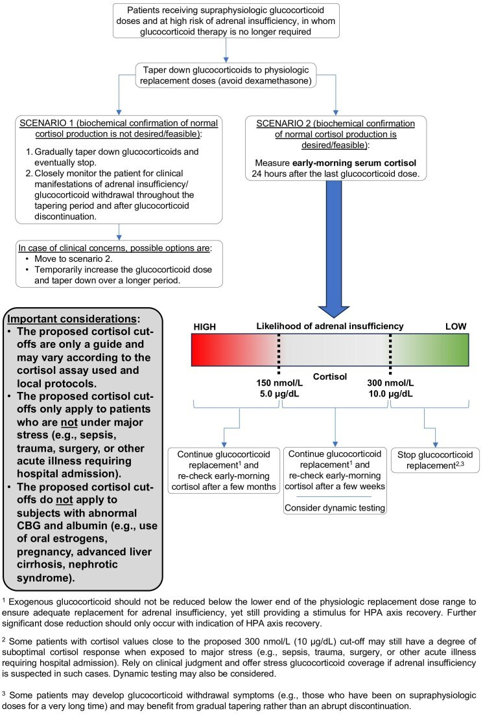
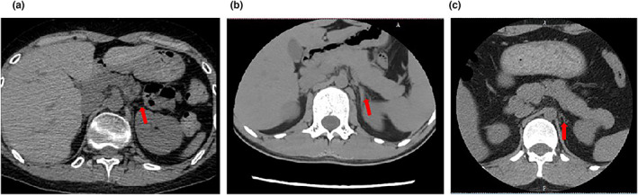
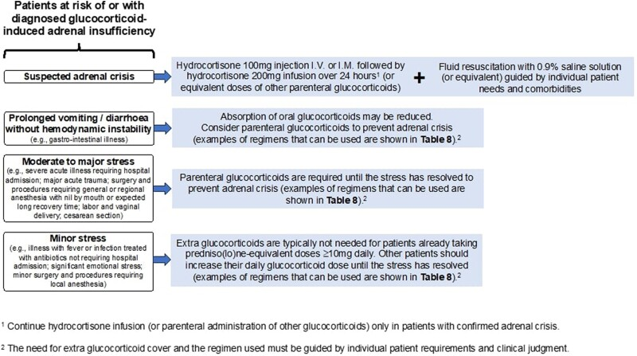

1463 — Suy thượng thận thứ phát do corticoid kéo dài: ngưỡng cortisol, lịch giảm liều và cạm bẫy "tuyến thượng thận teo" / Glucocorticoid-induced adrenal insufficiency
Tags: pattern:suy-thuong-than pattern:teo-tuyen pattern:ha-natri vung:hau-phuc-mac protocol:CT-thuong-than protocol:MRI-tuyen-yen score:cosyntropin-250mcg
Mức chắc chắn (certainty): tổng hợp y văn (literature synthesis) — số liệu lấy từ hướng dẫn chung ESE–Endocrine Society 2024 (PMC11180513, CC BY-NC 4.0), đoàn hệ 371 bệnh nhân cơn suy thượng thận (PMC11685088, CC BY), đoàn hệ giảm liều prednisolone 2019–2024 (PMC12811712, CC BY 4.0), đoàn hệ nhi khoa 92 ca (PMC9798323, CC BY) và ca teo thượng thận trên CT (PMC10265046, CC BY). Nhóm không có bệnh nhân của mình.
Câu chốt: đây là chẩn đoán sinh hóa, không phải chẩn đoán hình ảnh — trên CT/MRI tuyến thượng thận của bệnh nhân suy do corticoid thường chỉ teo nhẹ, đối xứng, không có ngưỡng mm nào phân biệt được với người bình thường. Bốn con số phải thuộc: (1) nguy cơ chỉ đáng kể khi dùng ≥ 3–4 tuần với liều trên ngưỡng sinh lý (hydrocortison 15–25 mg/ngày; prednisolon 4–6 mg; dexamethason 0,25–0,5 mg); (2) cortisol sáng > 300 nmol/L (10 µg/dL) → cai được; 150–300 → giữ liều sinh lý, lặp sau vài tuần; < 150 nmol/L (< 5 µg/dL) → giữ liều, lặp sau vài tháng; (3) test cosyntropin 250 µg đỉnh < 500 nmol/L (18,1 µg/dL) = suy; (4) cơn suy thượng thận: hydrocortison 100 mg tĩnh mạch/bắp rồi 200 mg/24 giờ + NaCl 0,9%.
1. Tổng quan bệnh học – cơ chế hình ảnh
1.1 Vì sao corticoid ngoại sinh làm tuyến teo — và vì sao aldosteron vẫn bình thường
- Trục HPA bình thường: hạ đồi tiết CRH → tuyến yên tiết ACTH → vỏ thượng thận tiết cortisol. Cortisol ức chế ngược lên cả hạ đồi và tuyến yên; đây là vòng điều hòa âm.
- Corticoid ngoại sinh gắn thụ thể glucocorticoid ở hạ đồi–tuyến yên mạnh hơn cortisol nội sinh, nên CRH và ACTH bị khóa ở mức thấp ngay từ ngày đầu. Khi ACTH thấp kéo dài, zona fasciculata và zona reticularis teo (giảm khối tế bào, giảm mao mạch xoang) → tuyến mảnh, nhỏ, đối xứng.
- TẠI SAO không tăng kali: aldosteron do hệ renin–angiotensin–aldosteron điều khiển, không phụ thuộc ACTH. Vì vậy suy thượng thận thứ phát có hạ natri nhưng kali bình thường, khác hẳn bệnh Addison (suy nguyên phát: hạ natri + tăng kali + tăng sắc tố).
- TẠI SAO hạ natri: cortisol thiếu làm ADH tăng (mất ức chế trực tiếp) và giảm mức lọc cầu thận → giữ nước tự do → hạ natri pha loãng, không phải mất muối qua thận.
- TẠI SAO hạ đường huyết và tăng bạch cầu ái toan: cortisol là hormone tăng đường huyết (tân tạo đường) và giảm bạch cầu ái toan; thiếu cortisol → đường huyết đói thấp, bạch cầu ái toan tăng — dấu hiệu này xuất hiện trong đoàn hệ 371 ca và là một trong các biến số độc lập dự báo cơn suy thượng thận (PMC11685088).
- TẠI SAO teo tuyến thấy được trên CT chứ không chẩn đoán được: ACTH thấp làm giảm thể tích vỏ thượng thận sau nhiều tháng, nhưng tuyến bình thường vốn đã mảnh vài mm, và ngưỡng teo chồng lấp hoàn toàn với người gầy, người cao tuổi. Hình ảnh chỉ trả lời câu hỏi "có nguyên nhân khác không" (xuất huyết, di căn, lao, u tuyến yên), không trả lời "có suy thượng thận không".
1.2 Các con số quyết định (ngưỡng liều – thời gian – tỷ lệ)
- Định nghĩa "dùng kéo dài" (ESE/ES 2024): > 3–4 tuần với liều trên ngưỡng sinh lý. Ngưỡng sinh lý/ngày: hydrocortison 15–25 mg, prednison/prednisolon 4–6 mg, methylprednisolon 3–5 mg, dexamethason 0,25–0,5 mg (PMC11180513).
- Dưới 3–4 tuần: không cần giảm liều từ từ và không cần test trục, bất kể liều (khuyến cáo 2.1).
- Tỷ lệ suy thượng thận do corticoid (gộp phân tích): đường uống 48,7% (KTC 95%: 36,9–60,6), tiêm trong khớp 52,2% (40,5–63,6), đường mũi 4,2% (0,5–28,9) (PMC11180513).
- Hồi phục theo thời gian: nhóm dùng ngắn (141 bệnh nhân) suy giảm từ 38,7% xuống 14,9% sau 4 tuần; nhóm dùng dài (174 bệnh nhân) từ 56,4% xuống 25,3% sau 6 tháng (PMC11180513 dẫn Broersen và cs).
- Giảm liều ở vùng sinh lý có tác dụng thật: mỗi 1 mg prednisolon giảm làm cortisol nền tăng 48,8 nmol/L (KTC 95%: 30,6–67,0); 38/47 (81%) bệnh nhân cai được hoàn toàn; liều trung vị lúc chuyển chuyên khoa 5 mg, thời gian dùng trung vị 23 tháng (PMC12811712).
- Trẻ em: cortisol sáng < 144 nmol/L** dự báo suy thượng thận với **độ đặc hiệu 94%**; **> 317 nmol/L dự báo trục bình thường với độ nhạy 95% → có thể bỏ ~50% test động (PMC9798323). Test liều thấp 1 µg dùng cortisol đỉnh < 500 nmol/L làm ngưỡng.
- Cơn suy thượng thận: trong 371 bệnh nhân suy do corticoid nhập viện (đoàn hệ hồi cứu một trung tâm tại Vân Nam, 2014–2023), 13,75% có cơn suy thượng thận trong đợt nằm viện; tử vong nội viện 62,75% so với 44,06% ở nhóm không có cơn (PMC11685088). Nhiễm trùng, triệu chứng tâm thần, natri máu, albumin, NLR, ELR là yếu tố độc lập.
2. Mẫu hình + chẩn đoán phân biệt theo bối cảnh (gamut)
Mẫu hình lâm sàng–xét nghiệm cần nhận ra: mệt – chóng mặt khi đứng – buồn nôn – hạ natri – hạ đường huyết – tăng bạch cầu ái toan, xuất hiện khi đang giảm liều hoặc trong 1–2 tháng sau ngừng corticoid, ở người có tiền sử dùng corticoid ≥ 3–4 tuần.
- Theo thời điểm: (a) đang giảm liều trong vùng trên sinh lý → phần lớn là hội chứng cai corticoid, chưa phải suy thượng thận; (b) đang ở liều sinh lý hoặc đã ngừng < 2 tháng** → vùng suy thượng thận thật; (c) **> 1 năm sau ngừng → hiếm, nhưng có thể còn suy nếu dùng liều cao rất dài.
- Theo mức độ: nhẹ (chỉ mệt, cortisol 150–300) → trung bình (hạ natri, tụt áp khi đứng) → cơn suy thượng thận (tụt áp, nôn, rối loạn tri giác, sốc).
- Theo cơ chế khác cần loại trừ: nhiễm trùng huyết (nguyên nhân hạ áp hay gặp nhất và cũng là yếu tố khởi phát cơn), suy thượng thận nguyên phát (Addison, xuất huyết thượng thận, di căn, lao), suy tuyến yên (u tuyến yên, sau xạ sọ, sau mổ, hội chứng Sheehan), SIADH, suy giáp, bệnh lí tuyến yên sau xạ toàn sọ.
3. Bảng so sánh phân biệt (ma trận đối chiếu)
| Thực thể (entity) | Hình ảnh / xét nghiệm điển hình | Chốt vào (rule-in) | Chốt loại (rule-out) | Gợi ý xác nhận |
|---|---|---|---|---|
| Suy thượng thận do corticoid (GIAI) | CT: tuyến thượng thận mảnh, đối xứng, không khối; cortisol sáng thấp; ACTH thấp hoặc bình thường thấp | Tiền sử ≥ 3–4 tuần corticoid trên ngưỡng sinh lý + cortisol sáng < 150 nmol/L hoặc đỉnh cosyntropin < 500 nmol/L | Kali bình thường, không tăng sắc tố, aldosteron–renin bình thường → không phải Addison | cortisol sáng 8–9 giờ trước liều, test cosyntropin 250 µg, ACTH |
| Suy thượng thận nguyên phát (Addison) | CT: tuyến nhỏ, có vôi hóa (lao, xuất huyết cũ) hoặc to–không đồng nhất (di căn, nấm, xuất huyết) | Hạ natri + TĂNG kali, tăng sắc tố, ACTH tăng cao, renin tăng | Kali bình thường + ACTH thấp → không phải nguyên phát | ACTH, renin, aldosteron, kháng thể 21-hydroxylase, CT thượng thận |
| Suy tuyến yên (nhiều trục) | MRI: u tuyến yên, hội chứng yên rỗng, sau xạ/mổ, ngấm thuốc bất thường | Thiếu ≥ 2 trục (TSH/FSH/GH), cortisol thấp, ACTH thấp | Chỉ một trục cortisol + tiền sử corticoid rõ → GIAI | MRI tuyến yên có/không cản quang, các hormone nền |
| Hội chứng cai corticoid | Hình ảnh bình thường; cortisol có thể bình thường vì liều còn trên sinh lý | Triệu chứng khi giảm liều nhưng tổng liều vẫn trên sinh lý (prednisolon > 5 mg) | Cortisol thấp + đang ở ngưỡng sinh lý → là suy thật, không phải cai | Đánh giá lại sau khi giảm chậm, không tăng liều mù |
| Sốc nhiễm khuẩn | CT: ổ nhiễm, tuyến thượng thận có thể xuất huyết hai bên (rìa tăng đậm, không ngấm) | Sốt, CRP/PCT cao, ổ nhiễm rõ, lactate cao | Không ổ nhiễm + cortisol thấp + tiền sử corticoid → nghĩ GIAI | Cấy máu, CT ổ nhiễm, cortisol khi sốc (không chờ) |

Hình 2 của hướng dẫn ESE–Endocrine Society 2024: giảm liều đến ngưỡng sinh lý rồi đo cortisol sáng 24 giờ sau liều cuối; 150–300 nmol/L giữ liều và lặp sau vài tuần, < 150 lặp sau vài tháng. Nguồn: Beuschlein F et al, J Clin Endocrinol Metab 2024 (PMC11180513), CC BY-NC 4.0.4. Protocol chụp – xét nghiệm – lịch giảm liều và xử trí cơn
4.1 Xét nghiệm (quyết định chẩn đoán)
- Cortisol sáng 8–9 giờ, lấy trước liều corticoid, tốt nhất 24 giờ sau liều cuối nếu đang dùng liều một lần/ngày (PMC11180513).
- Ngưỡng đọc: > 300 nmol/L (10 µg/dL) = trục đủ → cai được; 150–300 nmol/L = giữ liều sinh lý, lặp sau vài tuần; < 150 nmol/L (< 5 µg/dL) = giữ liều, lặp sau vài tháng.
- Test cosyntropin 250 µg (Synacthen): cortisol đỉnh 30–60 phút < 500 nmol/L (18,1 µg/dL) = suy thượng thận; đây là ngưỡng của cả suy nguyên phát và thứ phát (PMC11180513).
- Trẻ em: dùng test liều thấp 1 µg với ngưỡng cortisol < 500 nmol/L sau 20 phút; cortisol sáng < 144 nmol/L** đủ gợi ý, **> 317 nmol/L loại trừ (PMC9798323).
- ACTH nền: thấp trong GIAI, tăng cao trong Addison — đây là xét nghiệm rẻ nhất để phân biệt thứ phát/nguyên phát.
- Không làm test động thường quy cho người đang giảm liều (khuyến cáo 2.8): kết quả dễ gây tăng liều oan.
4.2 Lịch giảm liều (hai pha)
- Pha trị liệu: giảm nhanh khi liều còn cao (> 30 mg prednisolon/ngày), vì mục tiêu là kiểm soát bệnh nền.
- Pha nội tiết: khi đã về 4–6 mg prednisolon, giảm chậm, từng 1 mg, và không giảm dưới ngưỡng thay thế (hydrocortison 15–25 mg/ngày) để vừa đủ thay thế vừa còn kích thích trục hồi phục (PMC11180513). Mỗi 1 mg giảm cho +48,8 nmol/L cortisol nền (PMC12811712).
- Đổi thuốc: dexamethason/betamethason dài tác → chuyển sang hydrocortison hoặc prednison trước khi giảm, vì khó hiệu chỉnh liều và ức chế trục mạnh (khuyến cáo 2.5).
- Giáo dục bệnh nhân: thẻ corticoid, dấu hiệu suy thượng thận, quy tắc ngày ốm, không tự ngừng.
4.3 Liều khi stress (bắt buộc biết)
- Cơn suy thượng thận: hydrocortison 100 mg tĩnh mạch/bắp, sau đó 200 mg/24 giờ (truyền hoặc chia liều) + NaCl 0,9% theo huyết áp/natri; không chờ kết quả cortisol (PMC11180513).
- Nôn kéo dài/tiêu chảy, không sốc: cân nhắc corticoid đường tiêm vì hấp thu uống giảm.
- Stress vừa–nặng (nhiễm trùng nhập viện, mổ lớn, chấn thương): corticoid thêm cho đến khi hết stress.
- Stress nhẹ (sốt, nhiễm trùng điều trị ngoại trú, thủ thuật nhỏ): không cần thêm nếu đang dùng ≥ 10 mg prednisolon/ngày; nếu thấp hơn thì tăng liều tạm đến khi hết stress.
4.4 Protocol hình ảnh (khi nào chụp, chụp gì)
- Mặc định: KHÔNG chụp để chẩn đoán GIAI — hình ảnh không đủ đặc hiệu.
- CT thượng thận lát mỏng ≤ 2 mm, có cản quang khi: hạ natri + tăng kali (gợi ý nguyên phát), đau hố thận, sốc nhiễm khuẩn, tiền sử ung thư (di căn thượng thận), lao.
- MRI tuyến yên có/không cản quang khi: thiếu trục khác, đau đầu/thị trường, sau xạ sọ, prolactin cao, hoặc cortisol thấp mà không có tiền sử corticoid.
- Đo mật độ: tuyến thượng thận bình thường 30–40 HU chưa cản quang; xuất huyết cấp 50–90 HU; mỡ −40 đến −120 HU; di căn thường 20–45 HU và ngấm thuốc — dùng để phân biệt nguyên nhân cấu trúc, không dùng để chẩn đoán GIAI.
- Không dùng PET/CT thường quy cho tuyến thượng thận: FDG sinh lý SUVmax 0,83–0,95 chồng lấp với tổn thương lành tính (PMC11919078).
flowchart TD
A[Đang giảm liều hoặc ngừng corticoid dưới 2 tháng] --> B{Có triệu chứng + hạ natri hoặc tụt áp?}
B -->|Không| C[Theo dõi lâm sàng, không xét nghiệm thường quy]
B -->|Có| D[Cortisol sáng 8-9 giờ trước liều]
D --> E{Kết quả}
E -->|Nho hơn 150 nmol/L| F[Giữ liều sinh lý, lặp sau vài tháng]
E -->|150 đến 300 nmol/L| G[Giữ liều sinh lý, lặp sau vài tuần]
E -->|Lớn hơn 300 nmol/L| H[Cai corticoid]
F --> I{Tụt áp, nôn, rối loạn tri giác?}
G --> I
I -->|Có| J[Hydrocortison 100 mg + NaCl 0,9 phần trăm]
I -->|Không| K[Giáo dục quy tắc ngày ốm + thẻ corticoid]
5. Biến thể bình thường và cạm bẫy
- "Tuyến thượng thận teo" không phải chẩn đoán. Teo nhẹ, đối xứng gặp ở người gầy, cao tuổi, sau dùng corticoid kéo dài, và trong giảm sản thượng thận bẩm sinh — không có ngưỡng mm chuẩn hóa. Ảnh dưới là ca giảm sản thượng thận liên kết X (NR0B1): tuyến teo ở tuổi 25 nhưng còn dày ở tuổi 17 — chứng minh kích thước thay đổi theo thời gian, không phải dấu chẩn đoán một thời điểm.

Ba lát CT: (a) bệnh nhân 1 — tuyến thượng thận teo; (b) bệnh nhân 2 lúc 17 tuổi — tuyến còn dày; (c) cùng bệnh nhân lúc 25 tuổi — đã teo (mũi tên đỏ). Nguồn: Jiang Y et al, Mol Genet Genomic Med 2023 (PMC10265046), CC BY 4.0.- Nhầm hội chứng cai với suy thượng thận: khi tổng liều còn trên sinh lý, triệu chứng mệt/đau khớp là cai corticoid, không phải thiếu cortisol; tăng liều lại sẽ làm trục tiếp tục bị khóa.
- Cortisol "bình thường cao" giả: prednisolon phản ứng chéo với một số immunoassay cortisol → cortisol đo được cao giả trong khi trục vẫn khóa. Hỏi phòng xét nghiệm và ưu tiên LC–MS/MS khi nghi ngờ.
- CBG/albumin thay đổi: dùng estrogen, có thai, xơ gan, hội chứng thận nhiễm mỡ làm cortisol toàn phần sai lệch — hướng dẫn 2024 loại các nhóm này khỏi ngưỡng 150/300 (PMC11180513).
- Yên rỗng trên MRI là bất thường tình cờ: gặp ở 5–35% người bình thường, không chứng minh suy tuyến yên; chỉ có giá trị khi kèm thiếu trục khác.
- Suy thượng thận do corticoid + nhiễm trùng: bệnh nhân vừa dùng dexamethason liều cao (ví dụ phác đồ ICANS sau CAR-T) vừa sốt — nhiễm trùng và suy thượng thận cùng tồn tại; đừng vì "còn corticoid trong người" mà loại trừ cơn suy thượng thận (khuyến cáo 3.2).
- Sau ngừng corticoid 1–2 tháng: tỷ lệ tử vong tăng rõ trong 2 tháng đầu rồi giảm nhanh (đoàn hệ 70.638 người dùng corticoid uống, PMC11180513 dẫn) — đây là cửa sổ nguy hiểm cần theo dõi.

Hình 3 của hướng dẫn 2024: cơn suy thượng thận, nôn/tiêu chảy, stress vừa–nặng và stress nhẹ. Nguồn: Beuschlein F et al (PMC11180513), CC BY-NC 4.0.6. Tự lượng giá — Blind Quiz
Ca 1 — Nữ 55 tuổi, hen nặng, prednisolon 20 mg/ngày 8 tháng, nay giảm còn 5 mg. Mệt nhiều, natri 128 mmol/L, kali 4,0 mmol/L.
- Hỏi: bốn chẩn đoán phân biệt? Xét nghiệm đầu tay? Có phải Addison không, vì sao?
Bấm để hiện đáp án
- Phân biệt: suy thượng thận do corticoid, hội chứng cai corticoid, SIADH do thuốc/bệnh phổi, suy giáp.
- Cortisol sáng trước liều: nếu < 150 nmol/L → suy thượng thận, giữ liều sinh lý và lặp sau vài tháng; nếu 150–300 → lặp sau vài tuần.
- Không phải Addison vì kali bình thường và không tăng sắc tố; aldosteron còn nguyên do trục renin–angiotensin độc lập ACTH.
- Nguồn: PMC11180513 (ngưỡng 150/300), PMC11685088 (hạ natri là yếu tố độc lập của cơn suy thượng thận).
Ca 2 — Nam 62 tuổi, sau CAR-T có đợt dexamethason liều cao 3 tuần, ngừng 10 ngày. Sốt 39 °C, nôn, huyết áp 80/50 mmHg.
- Hỏi: chẩn đoán nghĩ tới? Làm gì trong 30 phút đầu? Vì sao không chờ cortisol?
Bấm để hiện đáp án
- Cơn suy thượng thận (khởi phát bởi nhiễm trùng), phải loại trừ sốc nhiễm khuẩn song song — hai bệnh cùng tồn tại.
- Hydrocortison 100 mg tĩnh mạch/bắp + NaCl 0,9%, cấy máu, kháng sinh theo ổ nhiễm; lấy cortisol trước liều hydrocortison nếu không làm chậm điều trị.
- Không chờ cortisol vì ngưỡng chẩn đoán không được dùng để trì hoãn corticoid khi có tụt áp + nôn (khuyến cáo 3.1–3.2, PMC11180513); tử vong nội viện trong đoàn hệ 371 ca là 62,75% ở nhóm có cơn.
Ca 3 — Bệnh nhân 30 tuổi, suy thượng thận nguyên phát đã biết. CT bụng vì đau bụng.
- Hỏi: hình ảnh này chứng minh gì? Có dùng để chẩn đoán suy thượng thận được không? Cần tìm gì thêm trên CT?
Bấm để hiện đáp án
- Hình ảnh cho thấy tuyến thượng thận mảnh, đối xứng — phù hợp teo vỏ do ACTH thấp hoặc giảm sản bẩm sinh, nhưng không có ngưỡng mm để phân biệt với người bình thường.
- Không chẩn đoán suy thượng thận bằng kích thước tuyến; chẩn đoán bằng cortisol + ACTH.
- Trên CT cần tìm nguyên nhân cấu trúc: vôi hóa (lao/xuất huyết cũ), khối > 4 cm, mật độ > 10 HU chưa cản quang, ngấm thuốc mạnh, xuất huyết hai bên.
- Nguồn ảnh: Jiang Y et al, Mol Genet Genomic Med 2023 (PMC10265046), CC BY 4.0 — ca giảm sản thượng thận liên kết X, không phải suy do corticoid; dùng để minh họa giới hạn của hình ảnh.
Bài liên quan chéo
- 155 – U thượng thận tình cờ (đọc mật độ/ngấm thuốc thượng thận)
- 1430 – Độc thần kinh sau CAR-T (ICANS) (bối cảnh dùng dexamethason liều cao)
- 1699 – Bệnh Cushing ở trẻ em
- 1748 – Cushing tái phát sau mổ xuyên bướm
- 1710 – Đái tháo nhạt trung ương sau mổ tuyến yên
- 1722 – Hạ natri muộn sau mổ tuyến yên
- 245 – U tuyến yên chảy máu/nhồi máu (pituitary apoplexy)
Ảnh
images/1463_suy-thuong-than_Fig_PMC11180513.jpg,images/1463_con-suy-thuong-than_Fig_PMC11180513.jpg— CC BY-NC 4.0 (phi thương mại, ghi công; không sửa).images/1463_teo-thuong-than_CT_PMC10265046.jpg— CC BY 4.0.- Nguồn + giấy phép từng ảnh:
images/CREDITS.md.
Không dùng để chẩn đoán độc lập khi chưa có người hướng dẫn.